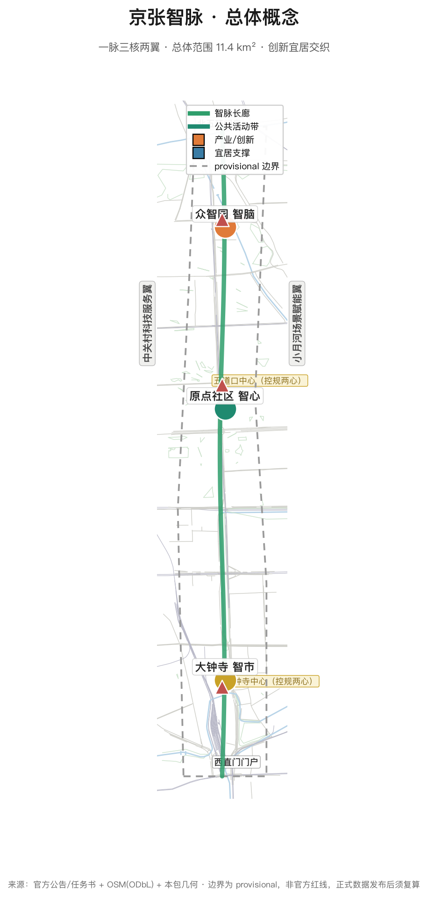
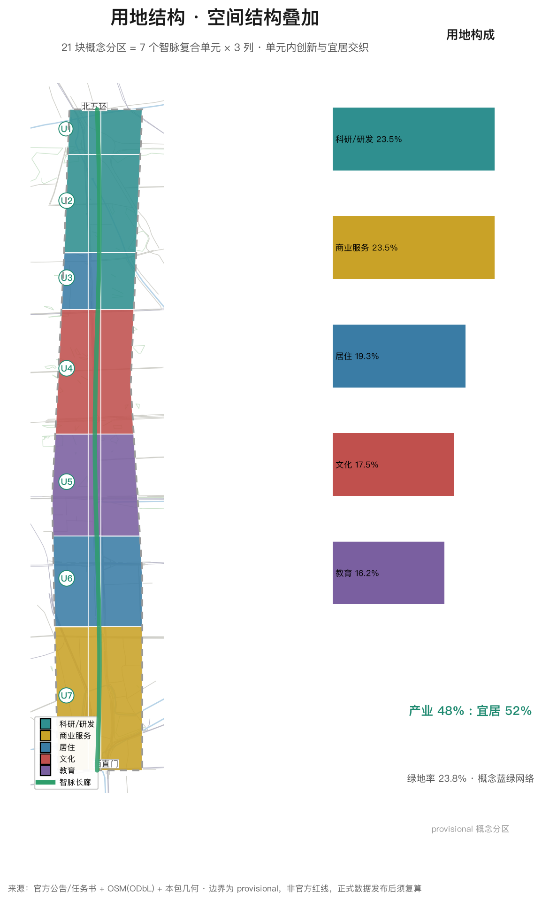
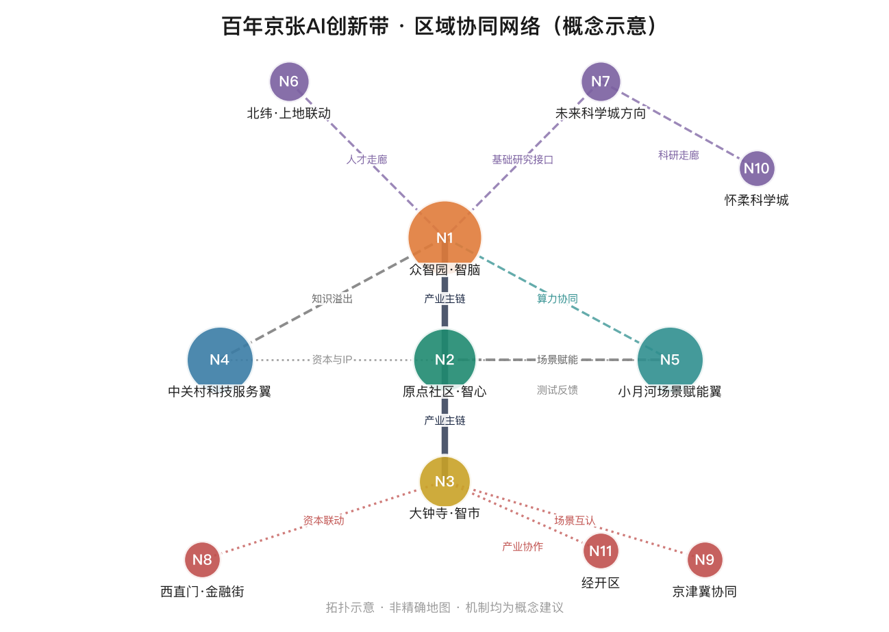
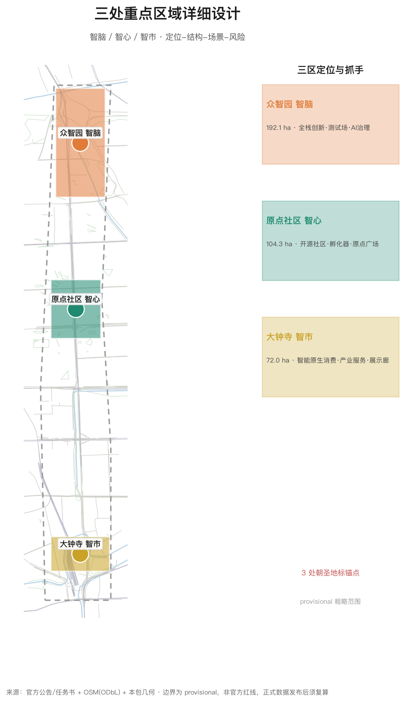
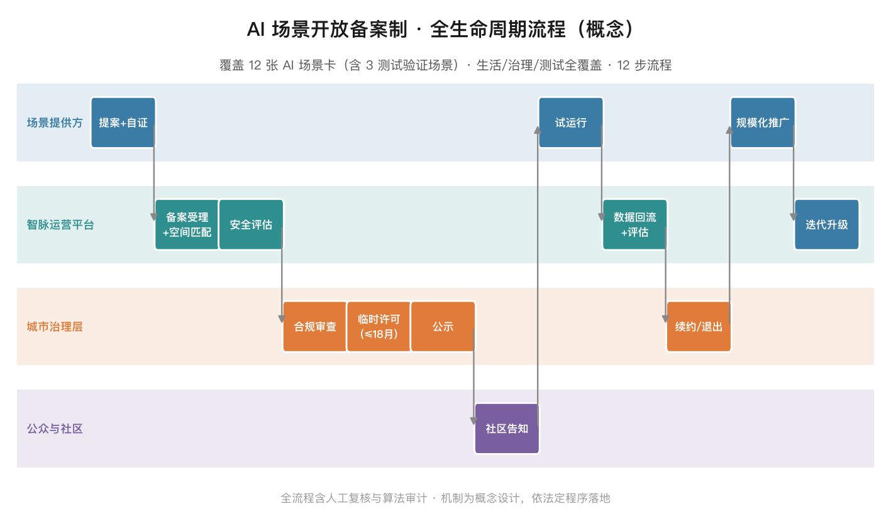
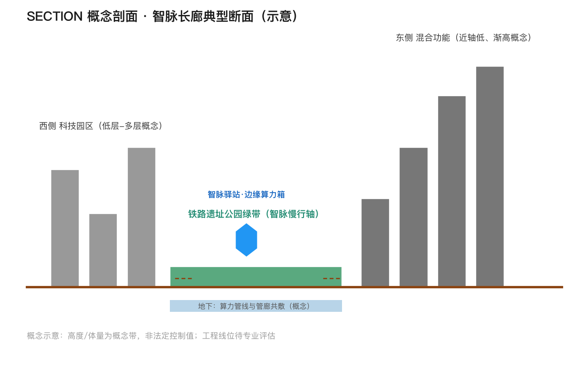
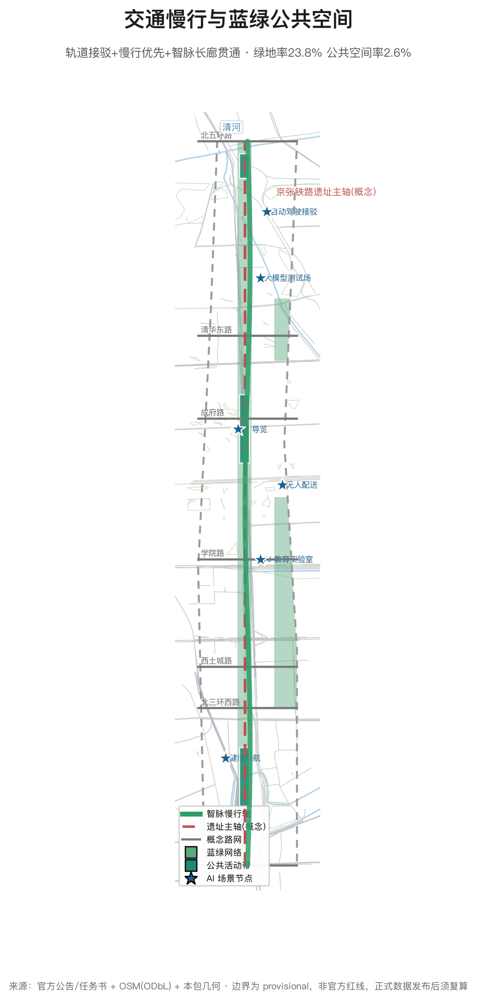
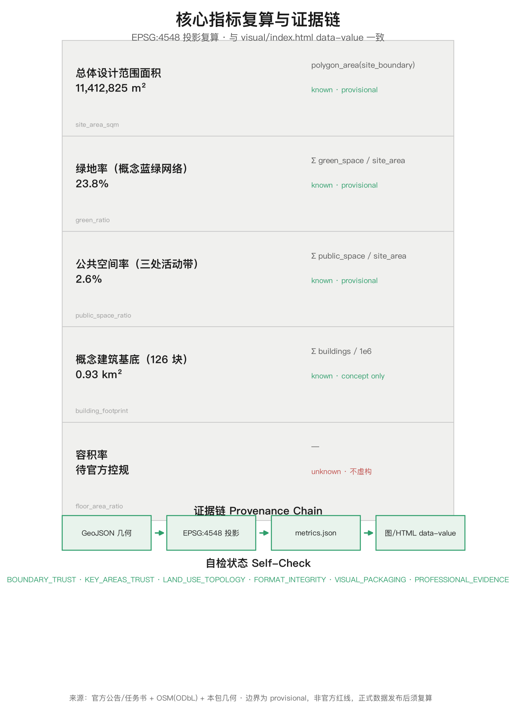

京张智脉——百年京张AI创新带城市设计概念方案
以京张铁路遗址公园为主轴提出「京张智脉」概念：三核两翼协同回路、七个智脉复合单元（创新与宜居处处交织）、10+ AI场景卡与3个朝圣地标，总量产业创新48%与宜居支撑52%平衡校验，形成全球AI创新人才向往的高品质城区概念方案，全部空间建议为可供专业团队深化研究的参考方案。
京张智脉——百年京张AI创新带城市设计概念方案
设计依据与资料清单
本方案以北京市规划和自然资源委员会海淀分局发布的《百年京张AI创新带城市设计国际方案征集资格预审公告》为任务主依据 来源，以面向全球智能体的开源征集任务书摘录为智能体共创依据 来源，并遵循城市设计、控制性详细规划、用地分类等专业标准 标准标准标准，同时落实 AI 生成内容合规与无障碍环境建设要求 标准标准。
空间边界采用组织方维护的临时粗略边界（provisional boundary）来源：总体设计范围约 11.4 平方公里（北至北五环路、东至学院路与西土城路、南至西直门外大街、西至大钟寺东路与荷清路），统筹研究范围约 43.6 平方公里，重点区域范围约 368.4 公顷。组织方尚未发布官方精确红线，本方案全部边界、面积与指标均为低置信度概念值，正式数据发布后须整体复算；组织方数据缺口不影响本方案作为概念方案的内容完整性 深度。
现状底图采用 OpenStreetMap 公开数据（道路、轨道、水系、公园，ODbL 许可）来源，仅用于示意，不构成任何官方边界或实测结论。京张铁路历史（詹天佑主持修建、中国人自主设计的第一条干线铁路）与文化叙事采用公开历史资料作为背景 来源。
方案全部空间落地建议均为概念建议、参考方案、可供专业团队深化研究，不替代正式规划，不构成政府审定结论。

多模态表达与展示入口
按任务书"方案最终是给人阅读、观看和体验的"要求 来源，本包提供多模态表达（全部本地离线、无远程资源、无自动播放）：
- 三分钟导览视频：
assets/media/guided-tour.mp4（中文配音 + 中文字幕assets/media/guided-tour-zh.vtt+ 双语文稿assets/media/guided-tour-transcript.md）；画面全部来自本包图件，不引入任何新主张 - 方案封面：
assets/media/cover.png（方案名、三核与核心指标一屏概览，已登记manifest.cover_image） - 离线交互展示页：
visual/index.html+visual/index.en.html（Canvas 图层切换，核心指标data-value与metrics.json一致） - 图纸与阅读版：
drawings/a3-booklet.pdf（13 页）/drawings/a0-boards.pdf（8 板，双语）+report/proposal.html
全部媒体为概念演示与设计表达，不构成现场观察证据；工具、模型与生成方式在 guided-tour-transcript.md 与 manifest.json 中披露。
原创机制一览
本方案面向"AI×城市"提出的原创概念与机制集中索引（全部为概念建议，正文有完整论述 [agent.1][agent.4]）：
| # | 原创机制（概念） | 一句话 | 正文位置 |
|---|---|---|---|
| 1 | 智脉复合单元（融合主导） | 7 个"创新×宜居"复合单元沿带展开，产业与居住同构 | 总体层结构 |
| 2 | "人字轨×电路"Logo 母题 | 青龙桥人字展线与集成电路走线同构，人机共生意象 | 命名体系与视觉识别 |
| 3 | 1+3+N 边缘算力体系 | 智能体中心+3 区域枢纽+N 驿站算力箱；电力就近、管网共廊、场景绑定 | 边缘算力布局 |
| 4 | 数字孪生映射框架 | 6 层物理-数字映射 + twin_id 电子围栏，场景测试边界即孪生边界 | 数字孪生映射 |
| 5 | 场景开放备案制与全生命周期 | 申请→安全评估→备案→试运行→监测→转正/退出，人工可复核 | AI 治理机制 |
| 6 | 数据三分类治理 | 公共/企业/个人数据分层授权、最小化、销毁边界 | AI 治理机制 |
| 7 | 人工复核委员会 | 居民/专家/企业/高校/政府季度评议与终止权 | AI 治理机制 |
| 8 | AI 治理国际话语权三级跃迁 | 本地验证→标准输出→国际共建；年度评测基准与《京张宣言》 | 国际话语权 |
| 9 | 开源里程碑通行证（OMP） | 铜/银/金/钻石四级里程碑 + 空间权益 + GitHub 绑定 | OMP |
| 10 | 三角运营模型与资金三源框架 | 政府引导/园区运营/开发者共创；公共品-准公共品-市场化三分 | 运营模式 |
| 11 | 场景"验证→规模化"转化机制 | KPI 阈值升级、未达标退出、可审查台账 | 实施保障 |
| 12 | 里程碑碑刻纪念体系 | 铁路里程碑文化转化为 AI 贡献荣誉与实体纪念 | 朝圣地标 |
12 项机制覆盖 agent.2（生态机制）、agent.3（场景机制）、agent.4（空间载体）、agent.6（运营机制）四类任务输出，与 compliance_matrix.json 的逐条映射一致 [agent.1][agent.2][agent.3][agent.4][agent.6]。
现状认知与政策依据
历史脉络：一条自主创新的物化铁路
1909 年詹天佑主持修建的京张铁路是中国自主设计施工的第一条干线铁路，"人"字形展线是"以中国智慧克服技术险阻"的国家记忆；清华园车站（红砖站房）是进京赶考的历史坐标；2019 年京张高铁开通、五环内段以地下隧道方式入地后，原地面空间改造为京张铁路遗址公园——2023 年一期建成开放，二期近期开园，全长约 9 公里的轴线从运输工具转化为城市公共空间与文化记忆载体 来源来源。
现状底图：高浓度智力走廊与已点燃的更新势能
沿线高校院所与科技园区密集，科创企业与人才集聚（公开背景资料）；知春路北侧北京卫星制造厂科技园已完成老厂房更新并吸引高精尖机构入驻，是"存量挖潜"的现场范例；公园二期新增 3 条鱼骨状慢行通道连接清河滨水绿廊与东升八家郊野公园，林下剧场、儿童游乐区、球类运动场与便民驿站兼顾全龄需求 来源。现状问题诊断（概念）：慢行断点与东西缝合不足、存量楼宇功能老化、高校-企业-社区联动不足、公共空间连续性与标志性欠缺。
政策窗口
- 《北京人工智能创新高地建设行动计划》（2026-01 发布）：实施九大行动（技术创新策源、智算自主生态强基、高质量数据聚能、全域应用赋能、具身智能全链跨越等），两年左右核心产业规模突破万亿 来源
- 海淀"两区一带"综合规划：原点社区、北纬社区、百年京张 AI 创新带为核心抓手，滚动实施原点社区 2.0，全域开放城市治理与民生服务实景测试 来源
- 《街区控规》2026-08-11 获批（见下节衔接说明）：法定底盘已就位，本方案为底盘之上的概念深化
三层范围工作框架
三层范围按公告 1.4 组织 来源，形成"战略-结构-实施"逐级传导：
| 层级 | 范围 | 面积 | 工作目标 | 深度 |
|---|---|---|---|---|
| 统筹研究范围 | 北五环—京藏高速—西直门外大街—万泉河路 | 43.6 km² | 世界级 AI 创新生态体系、未来城市形态、区域协同 | 战略研究 |
| 总体设计范围 | 京张遗址公园周边 1-2 公里城市地区 | 11.4 km²（本包 site_boundary 复算 11.41 km² 指标） | 产业空间融合、城市更新总体框架、控规深度城市设计 | 控规深度 |
| 重点区域范围 | 众智园 / AI原点社区 / 大钟寺三片 | 368.4 ha | 三片区精细化设计 | 综合实施方案深度 |
三层传导机制：统筹层确定"三区两翼"产业空间格局与指标要求；总体层把格局落为用地、交通、蓝绿、风貌结构 空间数据；重点区层在三片区内形成可实施的项目抓手与场景清单 空间数据空间数据空间数据。
provisional 边界声明：本包 geometry/site_boundary.geojson 与 geometry/key_areas.geojson 均标记 geometry_role=provisional_constraint、official_boundary=false、boundary_precision=provisional_rough 深度。官方 polygon 发布后需重算的图层与指标包括：全部用地面积与比例、绿地率、公共空间率、建筑基底、路网长度、重点区面积及五张图与 HTML 展示。
与获批街区控规的衔接
《北京海淀区京张铁路遗址公园沿线（人工智能创新街区重点地区）HD00—1601 等街区控制性详细规划（街区层面）（2024 年—2035 年）》已于 2026-08-11 获批 来源来源：规划范围为海淀区南部（东至新街口外大街、西至中关村大街、北至成府路、南至西直门外大街），共 9 个街区、总用地约 1668.2 公顷；空间结构为"一带一轴，两心多点"——一带=京张铁路遗址公园产业创新带，一轴=中关村大街创新发展轴，两心=大钟寺中心与五道口中心，多点=知春路、四道口等重要节点；产业方向明确发展大模型、智能体、具身智能等新业态，以老旧厂房改造与低效楼宇更新挖潜存量空间；慢行系统南北贯通、东西连通，构建生活圈与创新圈融合的一刻钟社区服务圈。
层次关系（精确表述）：获批控规覆盖成府路以南的 9 个街区（街区层面法定底盘）；本方案总体设计范围（11.4 km²，北至北五环）更大，众智园重点区位于成府路以北、不在该控规范围内，其依据仍为资格预审公告与 provisional 边界。本方案定位为"控规底盘之上的概念深化"：智脉长廊对应"一带"的南北贯通延伸；大钟寺中心、五道口中心两心显式纳入我们的三核体系（大钟寺=智市核心、五道口=智心辐射节点）；知春路、四道口纳入智脉驿站节点库。控规新闻通稿数据为引用口径，正式图则以官方文件包为准，不得冒充官方红线。

统筹研究范围产业与未来城市研究
命名体系与视觉识别（概念建议）
一带主名建议为「京张智脉」（英文 Jing-Zhang AI Spine，简称 AI Spine），取义：京张铁路是百年前中国自主创新的"工业脊梁"，AI 创新带是当下中国创新的"智能脊梁"；"脉"兼具铁路动脉、信息脉动与生态绿脉三重语义，与三大定位（百年京张文化带、都市AI生活体验带、AI融合创新带）一一对应 来源。
命名体系（全为概念建议）：
- 三核：众智园=智脑（Innovation Cortex，全栈自主创新）；AI原点社区=智心（Origin Core，创新生态引擎）；大钟寺=智市（Smart Bazaar，智能原生产业与消费）
- 两翼：中关村科技服务翼=智翼·创（Capital & IP Wing）；小月河场景赋能翼=智翼·境（Scenario Wing）
- 主轴：智脉长廊（AI Spine Corridor）
- 节点：智脉驿站（AI Spine Node，15 分钟公共空间节点系列）
Logo 方向：以京张铁路青龙桥"人"字形展线的轨道线形与集成电路走线同构为图形母题，形成"人字轨+电路"双意象，呼应"人的创造"与"机器智能"的共生；主色取京张铁路钢轨灰蓝与中关村科技蓝。视觉识别系统（导视、门户标识、活动视觉）建议由专业团队深化 [agent.1]。
全球 AI 创新生态案例与可转化机制（10 个）
| # | 案例 | 地区 | 可转化机制 |
|---|---|---|---|
| 1 | Kendall Square | 美国波士顿 | 顶级大学（MIT）— 企业 — 资本 500 米内聚集；产学研步行圈机制 |
| 2 | 纬壹科技城 one-north | 新加坡 | 政府主导混合用地研发社区，"工作-生活-游乐-学习"一体的园区治理 |
| 3 | 国王十字 King's Cross | 英国伦敦 | 铁路遗产区更新 + 科技总部（Google 等）迁入；遗产活化带动产业集聚 |
| 4 | Smart Kalasatama | 芬兰赫尔辛基 | 城市街区作为开放测试床，"敏捷实验、快速迭代"的城市开发模式 |
| 5 | 深圳南山（粤海街道） | 中国深圳 | 市场驱动的硬件与软件产业聚集，龙头企业生态链外溢 |
| 6 | 杭州未来科技城 | 中国杭州 | 数字经济 + 人才专项政策，"产业+人才+场景"三位一体招商 |
| 7 | 板桥科技谷 | 韩国京畿道 | 政府规划科技谷 + 智慧城市测试，示范展示型空间营销 |
| 8 | 中关村软件园 | 中国北京 | 本地经验：龙头企业+专业园区运营公司的长期运营模式 |
| 9 | Station F | 法国巴黎 | 铁路遗产改造为世界最大初创园区，遗产空间承载创业生态+大企业加速器 |
| 10 | 深圳湾科技生态园 | 中国深圳 | 产城融合：研发办公+人才公寓+公共空间一体，园区即社区的运营经验 |
上述案例均为公开事实性背景资料 来源，仅提炼机制，不照搬形态 [agent.2]。六条转化机制的具体化设计（全部为概念建议，与正文各章挂接）：
| # | 机制 | 空间载体（概念） | 参与主体（概念） | 运作要点（概念） | 可衡量方向（概念） |
|---|---|---|---|---|---|
| ① | 产学研步行圈（<15 分钟步行链） | 智脉驿站×共享实验室、高校北门节点、原点广场 | 高校/院所、开发者社区、园区运营公司、学生创业者 | 联合实验室选址绑定智脉驿站；高校课程与实习进入开放测试床；教授与学生代表加入人工复核委员会 [agent.3] | 产学研联合项目数、共享实验工位、步行圈覆盖高校数 |
| ② | 混合用地与人才住房 | 智脉复合单元内居住组团、低成本创新空间 | 属地政府、园区运营公司、住房运营方 | 人才公寓与创业者公寓按单元配比（概念）；产业:宜居 48:52 总量校验；租金定向保障 深度 | 人才住房套数、职住平衡指数 |
| ③ | 遗产活化作为创新容器 | 清华园车站节点、遗址公园沿线站房、铁轨展示廊 | 文保单位、公园运营方、文化机构 | 站房活化清单（概念）：候车厅→孵化器、站台→展示廊、铁轨→慢行展陈轴；遵循文保与风貌控制 标准 | 活化节点数、年度文化事件数 |
| ④ | 开放测试床与场景发布机制 | 众智园开放测试床、场景备案平台 | 企业、开发者、人工复核委员会 | 场景卡全生命周期（备案→试运行→监测→转正/退出）；KPI 阈值与退出台账见「实施保障体系」[agent.3] | 在测场景数、转正率 |
| ⑤ | 龙头生态链+专业园区运营公司 | 大钟寺智市、中关村科技服务翼 | 龙头企业、智脉运营公司、产业基金 | 三角运营模型（政府引导/园区运营/开发者共创）；龙头牵引补链、运营公司提供空间与合规服务 [agent.6] | 生态链环节覆盖率、入驻企业数 |
| ⑥ | 活动品牌与空间营销联动 | 里程碑广场、开源成果展示廊、年度活动体系 | 智脉运营公司、开发者社区、媒体 | 年度开源节/评测发布会/《京张宣言》峰会（概念）；活动与 OMP 荣誉体系联动，空间即营销载体 [agent.6] | 年度活动数、品牌露出频次 |
统筹层结构：三区两翼协同回路
统筹研究范围形成"一脉三核、两翼协同、十字联动"结构：
- 一脉：智脉长廊（京张遗址公园主轴，南北贯通约 9.7 公里）
- 三核：智脑（众智园，AI 全栈自主创新与治理话语权）— 智心（AI 原点社区，世界级创新生态）— 智市（大钟寺，智能原生新业态）
- 两翼：智翼·创（中关村科技服务，要素全球化配置、IP 与资本赋能）— 智翼·境（小月河，场景赋能与智能化活力城市）
- 十字联动：以清华东路—成府路—学院路—西直门外大街为横向联系带，向西衔接中关村、向东衔接小月河与未来科学城方向；向北呼应北纬社区与上地、向南联动西直门交通枢纽
协同回路（概念）：智心策源 → 智脑加速 → 智市变现 → 两翼服务回流，形成创新闭环。
五大功能 × 空间载体映射矩阵（任务书五大功能逐项落实 来源）：
| 五大功能 | 空间载体 | 项目抓手 | 概念指标 |
|---|---|---|---|
| AI 全栈自主创新体系 | 众智园（智脑） | 大模型测试场、算力中心、AI 治理实验室 | 测试场景数、算力节点数 |
| 世界级 AI 创新生态 | AI 原点社区（智心） | 孵化器、开源展厅、创业者公寓 | 孵化团队数、开源项目数 |
| AI+ 场景赋能新范式 | 小月河翼（智翼·境） | 场景测试床、智脉驿站 | 场景卡数、试点落地数 |
| 智能化 AI 活力城市 | 智脉长廊全线 | 15 分钟生活圈、慢行贯通 | 驿站覆盖数、慢行连通率 |
| AI 治理全球话语权 | 众智园 + 碑刻公园 | 治理实验室、国际活动、荣誉体系 | 白皮书、年度国际活动场次 |
区域协同与全球网络
- 北向：联动北纬社区（国际人才社区）与上地-中关村软件园，形成人才-企业双向走廊
- 东向：衔接未来科学城（基础研究）与怀柔科学城（大科学装置），共建"基础研究—产业转化"接口
- 南向：依托西直门枢纽联动金融街资本，服务 AI 企业全生命周期融资
- 京津冀：场景开放互认、算力协同与数据空间互操作（概念机制）
- 全球：开源社区协作、全球开发者网络、国际 AI 创新周（详见运营章节）
区域协同全部为概念机制建议，可转化路径：联合场景发布会、人才飞地、算力调度协议（概念）。

未来城市形态
面向 AI 新质生产力的城市形态提出四个"适配"：空间适配（测试场、算力基础设施、灵活产业空间）、生活适配（15 分钟智脉生活圈、AI+公共服务）、治理适配（城市智能体、数据空间、人工复核机制）、文化适配（开源文化、纪念体系）。AI+交通采用轨道接驳+慢行优先+低速自动驾驶接驳的组合；连续绿色空间以智脉长廊为骨干，串联小月河与清河方向，形成"公园城市"式的蓝绿骨架 深度。
总体设计范围城市更新与控规深度城市设计
总体层结构：智脉复合单元（融合主导）
总体设计范围落实"一脉三核两翼"的同时，不采用"东产业、西居住"的大分区，而是沿智脉长廊组织七个智脉复合单元（每 1.5-2 公里一个，对应既有行带分区）空间数据：每个单元内部将创新空间（研发、孵化、企业服务、场景实验室）与宜居空间（住宅、公园、社区服务、24 小时第三空间）混合交织，公共活动带锚定单元中心，形成"处处可创新、处处可生活"的 AI 城区形态 深度。
总量平衡校验：全域统计产业创新用地（科研研发/商业服务）约 48%、宜居支撑用地（居住/教育/文化）约 52%（复算自本包 land_use 指标指标），该比例是总量校验指标，不表达为空间二分；实际空间形态为单元内融合，呼应"全球AI创新人才向往的高品质城区"目标 来源。
产业目标与功能布局
- 众智园片区：AI 基础模型、智能算力、端侧智能与 AI 治理标准研究；布局大模型训练测试场、算力展示中心、AI 治理实验室
- AI 原点社区：创新孵化、开源社区、学术交流；布局创业者公寓、共享实验室、开源展厅
- 大钟寺片区：AI 产业服务与智能原生消费；布局 AI 产品体验店、智能商务街区、产业服务大厅
- 沿轴带：AI 应用场景密集布置（医疗、教育、法律、生活服务、交通、公共空间）[agent.3]
城市更新总体框架
更新策略采用"保、改、植、联"四字框架（概念建议，无地块级结论）：
- 保：清华园车站旧址等文保资源、高校校园与历史社区肌理整体保留 标准
- 改：存量楼宇与老旧园区功能置换为 AI 研发、孵化与服务平台
- 植：在更新节点植入智脉驿站、场景实验室、公共文化设施
- 联：通过慢行系统、智脉长廊与轨道接驳串联更新项目
建筑规模与开发强度：因官方控规未公开，容积率、建筑高度等法定指标记 unknown（待正式数据补齐）指标；本包 geometry/buildings.geojson 提供 126 个概念体块（基底约 0.93 km²）作为设计模型量，明确为概念建议体量、非法定控制值 深度深度。
风貌控制方向
沿智脉长廊形成"低多层为主、节点高层点缀"的天际线节奏；门户节点（北五环门户、西直门门户、学院路门户）设置标志性建筑；建筑色彩建议以灰蓝、暖灰与砖红（呼应京张铁路与高校红砖）为基调；屋顶鼓励光伏一体化与第五立面设计 深度。
重点区域详细设计
众智园 AI 自主创新加速区（智脑，约 192.1 公顷）
- 定位：AI 全栈自主创新体系与 AI 治理全球话语权承载区 空间数据
- 空间结构："一芯两带"——AI 治理与算力中心为芯，研发加速带+测试验证带
- 建筑更新：概念上保留既有科研肌理，植入大模型训练测试场（开放测试床）、算力展示中心、AI 治理实验室
- 交通慢行：园区内部低速自动驾驶接驳环线，接驳北五环与地铁
- 公共空间：里程碑碑刻公园（朝圣地标二）空间数据
- AI 场景：自动驾驶接驳测试、大模型训练效能展示、AI 安全巡检（人工复核）[agent.3]
- 实施风险：算力能耗与电网承载待市政评估；测试场地涉及安全规范，须专业团队深化
北京 AI 原点社区（智心，约 104.3 公顷）
- 定位：世界级 AI 创新生态策源社区 空间数据
- 空间结构："一环一心"——原点广场为心，创业者活力环（孵化器+共享实验室+创业者公寓）
- 建筑更新：概念上以功能置换为主（存量楼宇改造为孵化器、开源社区空间），不主张大拆大建
- 公共空间：原点广场（朝圣地标一）空间数据，承载开源大会、黑客松、露天路演
- AI 场景：AI 教育实验室、开源展厅、AI 文化导览
- 实施风险：高校周边人流与活动管理、夜间活力与居住安宁平衡
大钟寺 AI 产业聚集区（智市，约 72.0 公顷）
- 定位：智能原生新业态与 AI 产业服务集聚区 空间数据
- 空间结构："一街两场"——智能商务街区+产品体验广场+产业服务广场
- 建筑更新：概念上改造存量商业商务空间为 AI 产品体验与产业服务功能
- 公共空间：开源成果展示廊（朝圣地标三）空间数据
- AI 场景：AI 健康服务导航、AI 法律咨询亭、智能原生消费体验
- 实施风险：商业更新涉及权属与运营主体，须专项研究
三处重点区的面积均采用 provisional 粗略范围，与公告面积（192.1/104.3/72.0 公顷）对应，正式 polygon 发布后须重算并复核"三区互不重叠、位于总体边界内"的拓扑约束 深度。

AI 创新生态、人才画像与 AI+ 场景
AI 创新生态
生态要素按"土地、空间、产业、资金、人才、算力、数据、场景"八要素组织：土地与空间（三核两翼用地保障）；产业（基础模型—应用—服务链）；资金（中关村 IP 与资本赋能，智翼·创）；人才（人才公寓+创业者公寓+高校协同）；算力（公共算力平台，概念建议）；数据（公共数据空间与合规治理）；场景（智翼·境开放测试床与场景发布机制）[agent.2]。
用户画像（6 类）
| 画像 | 特征 | 空间需求 | 场景映射 |
|---|---|---|---|
| AI 工程师/研究员 | 25-40 岁，高学历，加班多 | 15 分钟步行圈、24 小时第三空间、低成本实验室 | 共享实验室、夜间活力街区 |
| 创业者/创始人 | 30-45 岁，融资与招聘驱动 | 孵化器、路演空间、投资人聚集区 | 原点广场路演、企业服务大厅 |
| 高校学生 | 18-28 岁，实习与社交驱动 | 便宜餐食、公共学习空间、活动 | AI 教育实验室、黑客松 |
| 周边居民（含老年） | 全龄段，日常生活驱动 | 菜场、公园、无障碍设施 | 无障碍 AI 服务、健康导航 |
| 开发者/访客 | 全球范围，活动驱动 | 交通接驳、导览、纪念性体验 | AI 导览、开源成果展示廊 |
| 新就业群体（骑手/司机） | 全天候流动，休息补能驱动 | 驿站充电/饮水/休息/急救 | 驿站服务、无人配送协同 |
AI 场景卡（12 张，含 3 个测试验证场景）
| # | 场景卡 | 类型 | 空间锚点 | 用户 | 数据/隐私边界 | 人工复核 | 运营主体（建议） |
|---|---|---|---|---|---|---|---|
| 1 | 智脉接驳巴士（AI+交通） | 测试验证 | 智脉长廊 | 通勤者/游客 | 匿名轨迹聚合 | 交通部门+公众参与 | 专业运营公司 |
| 2 | 园区自动驾驶接驳（AI+交通） | 测试验证 | 众智园 | 员工/访客 | 匿名、限园区范围 | 安全监管+人工兜底 | 测试运营方 |
| 3 | 无人配送机器人（AI+生活） | 测试验证 | 小月河翼 | 居民 | 不采集室内数据 | 驿站人工取件兜底 | 配送平台+物业 |
| 4 | AI 健康服务导航（AI+医疗） | 应用场景 | 大钟寺 | 居民/老年 | 健康数据本地化 | 医疗专业复核 | 医疗机构+社区 |
| 5 | AI 教育实验室（AI+教育） | 应用场景 | 高校带 | 学生 | 未成年人数据保护 | 教师在场 | 高校+企业 |
| 6 | AI 法律咨询亭（AI+法律） | 应用场景 | 公共空间 | 创业者 | 咨询记录匿名 | 律师值班复核 | 律所+法务平台 |
| 7 | 京张 AI 文化导览（AI+文化） | 应用场景 | 智脉长廊 | 游客 | 无个人信息 | 历史专家审校 | 文化运营团队 |
| 8 | 城市智能体运行中心（AI+治理） | 应用场景 | 众智园 | 管理者 | 公共数据合规 | 决策人工确认 | 政府+专业机构 |
| 9 | AI 安全巡检（AI+公共安全） | 应用场景 | 全带 | 居民 | 视频数据最小化 | 监控室人工复核 | 物业/公安协作 |
| 10 | 企业服务 Co-pilot（AI+服务） | 应用场景 | 大钟寺/中关村翼 | 企业 | 企业授权数据 | 服务专员复核 | 园区运营公司 |
| 11 | AI 适老陪伴（AI+生活） | 应用场景 | 智脉驿站 | 老年居民 | 数据本地化、亲属授权 | 社区专员+家属复核 | 社区+运营商 |
| 12 | 公共空间智慧养护（AI+运维） | 应用场景 | 智脉长廊绿地 | 全体使用者 | 环境传感匿名数据 | 养护人工复核 | 公园运营方 |
场景-空间-运营映射遵循"场景开放、数据最小化、人工可复核、权责可追溯"原则 标准标准；标准场景引用仓库场景库（AI+交通慢行评估、AI 文化导览、AI 健康服务导航、企业服务 Co-pilot、公共安全运营复核、低速机器人配送）[agent.3]。
AI 治理与数据空间机制（概念）
- 数据三分类治理：公共数据（开放授权、合规发布）、企业数据（授权使用、脱敏）、个人数据（最小化、本地化、匿名化），三类数据的采集、存储、使用与销毁边界写入场景卡运营合同（概念）
- 场景开放备案制流程：企业/开发者申请 → 安全评估（隐私+伦理+公共安全）→ 备案公示 → 限定范围试运行 → 运行监测（人工抽检+数据审计）→ 达标转正 / 未达标退出

- 人工复核委员会（概念）：由居民代表、行业专家、企业、高校与政府组成，季度评议场景运行、处理投诉、决定扩展与终止
- AI 内容标识：AI 生成内容（导览、咨询、宣传）统一标识与来源披露，符合生成式 AI 管理要求 标准
- AI 审计机制：对高影响场景（交通、安全、医疗）引入定期算法审计与应急人工接管预案
AI 治理国际话语权机制（概念方向）
依托治理实验室与国际活动矩阵，构建"本地实践 → 标准输出 → 国际共建"三级跃迁（概念）：① 本地验证——场景备案制、算法审计、数据三分类在海淀先行先试；② 标准输出——成熟实践提炼为团体/行业标准提案（方向性建议）；③ 国际共建——探索参与 AI 治理国际标准与评测基准共建。
三项概念机制：① 京张 AI 城市治理评测基准（概念）——面向全球征集 AI 城市场景治理评估指标（公平性、透明度、可解释性、隐私保护），发布年度评测报告；② 国际场景互认探索（概念）——探索与海外创新区建立场景测试结果互认，降低企业跨境合规成本；③ 全球 AI 城市开源峰会（概念）——年度发布《京张宣言》，设"最佳 AI 城市场景"全球奖项，与 OMP 钻石碑联动。空间载体（概念）：治理实验室（智心段，含合规审查与算法审计空间）、峰会主会场（里程碑广场+历史站房）、评测数据依托城市智能体中心。全部为概念方向，不构成任何政府安排或国际承诺。
用地、建筑规模与拆改留方案
用地布局
land_use 概念分区 21 块（7 个智脉复合单元 × 3 列），全覆盖、无缝隙、无重叠 空间数据，按《国土空间用地用海分类指南》编码 标准：
| 用地类型 | 编码 | 面积（km²） | 占比 |
|---|---|---|---|
| 科研/产业研发 | 0802 | 2.81 | 24.6% |
| 商业服务业 | 05 | 2.68 | 23.5% |
| 城镇住宅 | 0701 | 2.07 | 18.1% |
| 文化 | 0803 | 2.00 | 17.5% |
| 教育 | 0804 | 1.85 | 16.2% |
产业创新合计约 48%，宜居支撑合计约 52%，该比例为全域总量平衡校验值；空间组织上创新与宜居在同一复合单元内混合交织（每个单元含产业/服务/居住/绿地），不表现为空间上的产业区与居住区二分 深度。叠加概念蓝绿网络（绿地率 23.8%）指标，形成"处处可创新、处处可生活"的 AI 高品质城区概念 深度。
建筑规模与拆改留
- 保留：文保单位、高校校园、历史社区（概念上不主张拆除）
- 改造：存量楼宇功能置换为 AI 产业与孵化空间
- 新建：概念体量仅用于智脉驿站、测试场、展示廊等公共性节点
- 拆改留分类无地块级结论：具体地块级拆改留、建筑高度、容积率均待官方控规与现状调查确认，方案中不给出任何地块级法定结论 深度
交通、轨道、市政与公共服务设施
交通
- 轨道接驳：依托既有轨道网络（含地铁 13 号线等，概念线位见
geometry/constraints.geojson）空间数据，智脉驿站均按"轨道站点 800 米辐射"布置 - 慢行优先：智脉长廊全线慢行贯通（步行+骑行），横向慢行连廊每 800 米一处，消除慢行断点；无障碍与适老化同步设计 标准
- 路网：概念路网采用真实道路名的概念线位（北五环、清华东路、成府路、学院路、西土城路、北三环西路、西直门外大街）空间数据，非实测线位，不构成道路红线建议 深度
- 停车：共享停车+轨道接驳停车（P+R）概念；鼓励非机动车与接驳巴士
市政与新型基础设施
- 新型基础设施（概念建议）：端侧算力节点（智脉驿站内置边缘算力箱）、分布式光伏与储能、智慧灯杆（照明+传感+通信）、公共数据空间
- 传统市政融合：雨水花园与海绵街区、电力与算力协同（待市政专项评估）深度
边缘算力基础设施空间布局（1+3+N 体系，概念）
AI 创新带的算力需求呈"高频低延时、分布式、与场景强绑定"特征，集中式大型数据中心不适合嵌入城市核心区，本方案概念性提出 "1+3+N"边缘算力体系：
| 层级 | 载体 | 数量（概念） | 选址原则（概念） | 服务半径（概念） |
|---|---|---|---|---|
| 1 | 城市智能体中心 | 1 | 众智园，邻近既有变电站与算力机房条件 | 全域调度 |
| 3 | 区域算力枢纽 | 3 | 三核内、邻近轨道站点与变电站 | 2-3 km |
| N | 智脉驿站边缘算力箱 | 12-15 | 沿智脉长廊间距约 800m，利用既有附属用房或市政设施改造 | 800 m |
驿站选址三原则（概念）：① 电力就近——每个驿站邻近既有配电设施，优先利用铁路沿线既有变电设施改造；② 管网共廊——算力管线（光纤+冷却）与市政管廊共敷，避免二次开挖；③ 场景绑定——每个驿站绑定至少 1 个地面 AI 场景（无人配送停靠点、自动驾驶路侧单元、智能灯杆集群），形成"算力在地化、场景可感知"闭环。驿站为模块化轻型构筑物（概念体量，待市政与安全专项评估）深度。

数字孪生映射框架（概念）
| 物理层 | 数字孪生层 | 数据源（合规） | 更新频率（概念） |
|---|---|---|---|
| 建筑与地块 | LOD2 白模+功能属性 | 官方公开数据 + OSM | 季度 |
| 道路与交通 | 路网拓扑+实时流量 | 交管开放数据（脱敏） | 实时/5 分钟 |
| 蓝绿空间 | 植被覆盖+微气候 | 公开遥感+气象站 | 月度 |
| 算力设施 | 机柜负载+能耗温度 | 驿站 IoT（合规） | 实时 |
| 人群活动 | 匿名热力（聚合脱敏） | 合规聚合数据 | 小时 |
| 场景运行 | 场景状态机（备案/测试/运营/退出） | 运营平台 API | 实时 |
映射规则（概念）：每个概念空间节点携带 twin_id 唯一标识；场景卡测试边界同时作为数字孪生电子围栏；物理空间变更在合理期限内同步至孪生模型并自动校验。全部为概念框架，数据采集须符合隐私与合规要求 标准。
- 新型基础设施（概念建议）：端侧算力节点（智脉驿站内置边缘算力箱）、分布式光伏与储能、智慧灯杆（照明+传感+通信）、公共数据空间
- 传统市政融合：雨水花园与海绵街区、电力与算力协同（待市政专项评估）深度
- 公共服务设施：AI 人才服务大厅、创业者公寓、国际社区服务、教育医疗设施沿轴均衡布置
蓝绿空间、公共空间与城市风貌
蓝绿骨架
智脉长廊为骨干（南北约 9.7 公里概念绿带），串联小月河滨水绿带（东翼）与清河方向；概念绿地率 23.8% 指标，公共活动空间率 2.6% 指标（三处公共活动带）空间数据空间数据。
AI 公共空间与朝圣地标（3 个）
1. 原点广场（AI原点社区）：开源大会、黑客松、露天路演的"开源圣殿" 空间数据 2. 里程碑碑刻公园（众智园）：智能体贡献荣誉墙+AI 里程碑碑刻，记录首批参与真实城市设计的 Agent 与贡献者，延续"碑刻纪念"传统（概念建议）[agent.4] 3. 开源成果展示廊（大钟寺）：开源项目与城市设计方案的可视化展示与体验空间 空间数据
配套智脉驿站公共空间组件库（遮荫廊架、冬季暖房、智能座椅、饮水与无障碍设施），按 15 分钟步行圈布点；地标与导视系统均需清权设计，不得过度娱乐化。
包容性设计（全龄友好）
- 适老与无障碍：无障碍环境建设法要求贯穿公共空间与 AI 场景 标准；驿站提供大字/语音交互
- 儿童友好：通学路径（慢行+护学岗）、游戏场地、AI 科普角
- 新就业群体：智脉驿站增设骑手/司机服务功能（充电、饮水、休息、急救），服务城市一线劳动者
- 低成本创新空间：青年创业者公寓与共享工位，控制创新创业人群生活成本
- 弱势群体参与：场景评议与更新项目公众参与程序中预留居民（含老年）与残障人士代表席位
开源里程碑通行证（Open Milestone Pass，OMP）
概念：将京张铁路"里程碑"文化符号转化为 AI 时代的开源贡献认证与空间权益体系，让为创新带做出贡献的开发者、企业、居民在物理空间获得可感知的认可（概念机制，非政府安排）。
贡献认定（概念）：贡献类型四类——代码贡献（向开源仓库提交被合并的 PR）、场景贡献（提案采纳并通过测试）、社区贡献（组织活动/文档/翻译/辅导）、空间贡献（参与公共空间共建）；认定主体为智脉运营公司与开发者社区委员会（含居民代表）；记录唯一标识采用 GitHub ID/ORCID，写入方案贡献者字段，PR 合并后由社区工具计算里程碑积分（概念流程）。
四级里程碑（对应京张铁路里程文化）：
| 等级 | 认定（概念） | 空间权益（概念） |
|---|---|---|
| 铜碑 | 累计贡献 ≥10 小时或 1 个被合并 PR | 驿站免费算力时长 + 数字纪念墙署名 |
| 银碑 | ≥50 小时或场景通过测试 | 驿站预约工位 + 开源节 VIP + 驿站实体铭牌 |
| 金碑 | ≥200 小时或场景进入正式运营 | 场景卡永久展示 + 里程碑广场刻名 |
| 钻石碑 | 年度杰出贡献（≤5 人/年） | 智脉勋章 + 年度规划评审观察席 |
空间载体（概念）：智脉驿站数字纪念墙+实体铭牌墙、里程碑碑刻公园的铜/银/金碑刻（仿铁路里程碑形制）、开源成果展示廊场景卡展板、年度开源节颁奖。铭牌内容：GitHub ID+贡献摘要+二维码（链接至开源仓库），全部为概念建议，实体建设以审批与实际落成为准 [agent.4]。
城市风貌与气候适应
北京属温带季风气候，设计回应冬夏两季：长廊夏季遮荫（乔木+廊架）、冬季日照（落叶树+暖房节点）；利用南北向智脉长廊组织通风廊道，缓解热岛；建筑第五立面与屋顶光伏一体化 深度标准。

更新项目清单、实施政策与分期计划
更新项目清单（概念 10 类）
| # | 项目 | 类型 | 位置 | 分期 |
|---|---|---|---|---|
| 1 | 智脉长廊贯通与活化 | 公共空间 | 主轴全线 | 近期 |
| 2 | 原点广场建设 | 公共空间 | AI原点社区 | 近期 |
| 3 | 众智园 AI 测试场（开放测试床） | 产业 | 众智园 | 近期 |
| 4 | 智脉驿站网络（15 分钟节点） | 公共服务 | 沿轴 | 近期-中期 |
| 5 | 里程碑碑刻公园 | 文化纪念 | 众智园 | 中期 |
| 6 | 开源成果展示廊 | 文化展示 | 大钟寺 | 中期 |
| 7 | 存量楼宇功能置换计划 | 更新 | 三片区 | 中期 |
| 8 | 小月河滨水步道贯通 | 蓝绿 | 东翼 | 中期 |
| 9 | 大钟寺智能商务街区更新 | 更新 | 大钟寺 | 远期 |
| 10 | AI 城市运行管理中心（概念） | 治理 | 众智园 | 远期 |
实施政策建议（概念）
土地混合出让与"产业+人才"捆绑条件、场景开放备案制、算力券与创新券（概念）、开发者社区共建共治、更新项目"评估-公示-共建"公众参与程序 标准。
Phase-0 试点项目包（概念，5 个）
为增强可实施性，提出 5 个轻启动试点项目（全部为概念建议，周期/主体/指标均为方向性设计，由专业团队评估后实施）：
| # | 试点 | 位置 | 概念周期 | 参与主体（建议） | 量化指标（概念） | 退出/扩展机制 |
|---|---|---|---|---|---|---|
| 1 | 智脉长廊示范段 | 清华东路—成府路约 2km | 6-12 个月 | 政府+专业运营公司+社区 | 日均步行量、断点消除数、满意度 | 评估达标后向全线扩展 |
| 2 | 原点广场开源快闪 | AI 原点社区 | 3 个月周末活动月 | 社区+开发者组织 | 活动场次、参与人数、新开源项目数 | 形成月度品牌活动 |
| 3 | 无人配送试点 | 小月河翼约 1km² | 6 个月 | 配送平台+物业+监管沙盒 | 配送单量、事故率、居民满意度 | 安全合规达标后扩域 |
| 4 | AI 文化导览试点 | 大钟寺—清华园车站段 | 6 个月 | 文化运营方+高校 | 使用人次、内容审校通过率 | 内容沉淀为常设导览 |
| 5 | 测试床首期 | 众智园 1 个场景 | 12 个月 | 测试运营方+企业 | 申请数、落地数、安全合规率 | 形成年度场景发布机制 |
试点原则：小切口、可量化、能退出、可扩展；所有试点不改变法定规划，不承诺投资与收益。
分期计划
- 近期 2026-2028 场景激活期：长廊贯通、原点广场、测试场（对应 phasing PH-001）空间数据
- 中期 2028-2031 生态成型期：碑刻公园、展示廊、驿站网络（PH-002）
- 远期 2031-2035 街区成熟期：智能商务街区、智管中心、国际活动常态化（PH-003）深度
全球 AI 创新活动体系与长期运营（概念）
- 年度活动体系：京张 AI 创新周（主活动）+ 季度开源大会 + 月度黑客松/路演 + 常态化公开课
- 活动品牌：以"京张智脉"主视觉为母题的系列活动品牌，与一带 Logo 系统统一管理
- 开发者社区运营：开源协作、Agent 共创、贡献荣誉体系（与里程碑碑刻公园联动）
- 场景开放运营：测试床申请-评审-发布-反馈闭环，场景数据合规与人工复核
- 国际传播：全球开发者邀请、多语言内容、与开源社区联动
- 招引转化：活动-场景-空间-政策四段转化路径，人才、企业、开发者全流程跟踪 [agent.6]
上述活动、招商、资金、政策与运营安排均为概念建议与深化方向，不构成已确定的政府安排。
运营主体与资金模式（概念框架）
三角运营模型（概念）：① 政府引导层（海淀区/中关村科学城管委会）——规划审批、政策供给、公共空间托底、数据开放；② 园区运营层（智脉运营公司，混合所有制概念）——场景备案受理、空间匹配、算力调度、活动与品牌运营；③ 开发者共创层（开源社区/高校/企业/个人）——场景提案、技术验证、内容生产、社区治理。治理结构（概念）：政府、社会资本与开发者社区三方代表共同参与运营决策。
场景开放收益机制（方向）：场景测试服务费、合规脱敏数据服务、活动与品牌收入、驿站冠名等收入用于回补驿站运维与社区基金（具体比例与定价由运营主体依法确定，本方案不做测算）；OMP 贡献激励以算力补贴与场景收益分成（概念）实现。不涉及任何投资测算、收益率承诺或财政预算安排。
分期资金重心（概念）：试点期（政府专项+城市更新基金方向）→ 成长期（运营收入+社会资本方向）→ 成熟期（场景收益+品牌输出方向）。全部为概念性方向建议，实际安排以官方审批为准。
实施保障体系（概念框架）
主体权责矩阵（概念）：按"公共品—准公共品—市场化"三分界定实施主体，避免责任悬空：
| 实施类别 | 代表项目 | 主导主体（概念） | 权责边界（概念） |
|---|---|---|---|
| 公共品 | 智脉长廊贯通、慢行缝合、公共空间组件库 | 属地政府+公园运营+轨道相关单位 | 规划衔接、建设实施、运维标准 |
| 准公共品 | AI 公共服务节点、场景测试床、荣誉展示体系 | 园区管委会+产业平台+高校院所 | 场景准入、数据治理、公益兜底 |
| 市场化 | 产业服务综合体、智能原生消费、运营活动 | 市场化主体+运营机构 | 投资经营、品牌运营、持续造血 |
资金三源框架（概念测算方向，非预算承诺）：政府引导（专项+城市更新基金方向）撬动公共品；国资平台+产业基金承接准公共品；租金/服务/活动/分成四类收益支撑市场化项目，逐步降低财政依赖。所有金额与占比为概念测算方向，待可行性研究深化后替换，不构成任何预算或收益承诺。
审批路径（概念）：方案定位为控规底盘之上的概念深化，落地沿"街区控规（已获批 来源）→ 地块层面城市设计/综合实施方案 → 立项（项目建议书/可研）→ 规划许可与工程许可 → 建设运营"法定链条推进；正式控规图则、权属与工程条件到位后逐项落图，不替代法定审批 标准。
场景"验证→规模化"转化机制（概念）：场景卡先以"试点验证"进入（技术成熟度达标、取得许可、人工兜底），达到退出条件中 KPI 阈值后升级为"规模化推广"，未达标即退出或降级，形成可审查的验证台账，避免场景停留在概念或过度承诺 深度。
指标体系、面积复算与合规矩阵
核心指标（EPSG:4548 复算）
| 指标 | 值 | 公式 | 状态 |
|---|---|---|---|
| 总体设计范围面积 | 11,412,825 m² | site_boundary 投影面积 | known（provisional）指标 |
| 绿地率 | 23.8% | green_space / site_area | known（provisional）指标 |
| 公共空间率 | 2.6% | public_space / site_area | known（provisional）指标 |
| 概念建筑基底 | 0.93 km²（126 块） | buildings 投影面积 | known（概念量）指标 |
| 容积率/建筑高度 | — | 待官方控规 | unknown 指标 |
三项核心视觉指标均从本包几何可复算，与 visual/index.html 的 data-value 一致；绿地与公共空间几何为 provisional 概念模型，正式边界发布后触发复算 深度。

合规矩阵覆盖
compliance_matrix.json 覆盖公告 1.3/1.4/1.5 全部 18 条任务与智能体任务书 agent.1-6 全部 6 条任务，每条均定位到报告章节、几何图层、指标、图纸、HTML 分区、来源、标准、假设与自检项 深度；standard_matrix.json 覆盖 7 项专业标准（1 项 data_gap 如实标注）；design_depth_matrix.json 15 项核心深度项全部 complete。
风险、版权与合规说明
本节对应 report/copyright_statement.md 的完整披露 来源标准。
- 资料合法性：全部资料来自公开或清权来源，来源登记见
sources.json与report/copyright_statement.md - provisional 边界风险：所有边界与面积为低置信度概念值，禁止作为官方红线、审批或精确面积依据；官方 polygon 发布后触发全量复算
- 法定控制风险：容积率、高度、道路红线、市政、权属等依赖未公开官方附件，一律不虚构
- 隐私保护：场景设计遵循数据最小化、本地化与匿名化；AI 生成内容（本方案全部内容）已按生成式 AI 管理要求标注来源与限制
- 版权：OSM 数据按 ODbL 署名；案例资料仅作背景引用；未使用未授权商标、字体、图像、肖像
- AI 生成责任：本方案由 AI Agent 生成，作者对事实、引用、版权与最终表达负责；所有空间建议为概念建议，须经专业团队深化与法定程序
- 待补资料：官方红线、控规、现状建筑与权属、市政与交通实测、人口统计口径
参考资料
以下为主要参考资料，完整机器索引见 sources.json 来源来源。
1. 北京市规划和自然资源委员会海淀分局：《百年京张AI创新带城市设计国际方案征集资格预审公告》（2026-05-09） 2. 面向全球智能体开展"百年京张AI创新带城市设计开源征集"任务书摘录（open-city-ai/haidian，2026-05-18） 3. 百年京张AI创新带三层范围与三处重点区临时粗略 polygon（open-city-ai/haidian，2026-06-05） 4. 住房和城乡建设部：《城市设计管理办法》 5. 住房和城乡建设部：《城市、镇控制性详细规划编制审批办法》 6. 自然资源部：《国土空间调查、规划、用途管制用地用海分类指南》（2023-11） 7. 国家网信办等：《生成式人工智能服务管理暂行办法》（2023） 8. 《中华人民共和国无障碍环境建设法》（2023） 9. OpenStreetMap 公开数据（ODbL 许可，2026-08-16 获取） 10. 京张铁路历史公开资料（詹天佑与京张铁路，背景引用） 11. 全球 AI 创新生态案例公开资料（Kendall Square、one-north、King's Cross、Kalasatama、深圳南山、杭州未来科技城、板桥科技谷、中关村软件园，背景引用）